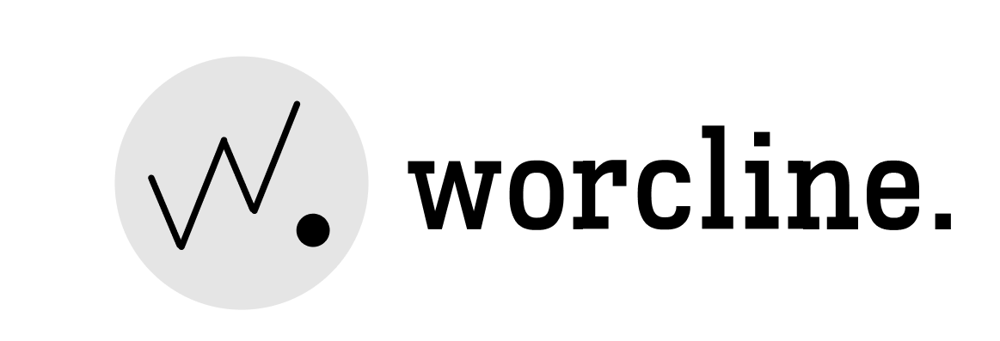

96%
Лучшее совпадение
Пробный запуск открыт
Один раз расскажите, какая работа вам нужна. Дальше получайте короткую подборку и решайте, куда действительно стоит откликнуться.
Ваш поиск
Продуктовый дизайнерЛучшее совпадение
Подходит
Подходит

Меньше шума
Вам не нужно каждый вечер начинать с нуля. worcline. отсеивает неподходящее и оставляет только варианты, которые заслуживают внимания.
Один раз настроить
Роль, опыт, город, формат и зарплата. Можно начать с готового резюме.
Каждая вакансия сверяется с вашими условиями. Случайные варианты не попадают в подборку.
Получаете короткий список и сопроводительные письма. Никакой отправки откликов вслепую.
Когда особенно полезно
Выберите свою ситуацию — каждая карточка приведёт к заявке.
Пробный запуск
Настроим поиск, соберём первые подборки и проверим, какие вакансии действительно подходят вам.
Первый шаг
Уточню, какую работу вы ищете, и расскажу, как пройдёт пробная неделя. Никаких рассылок.